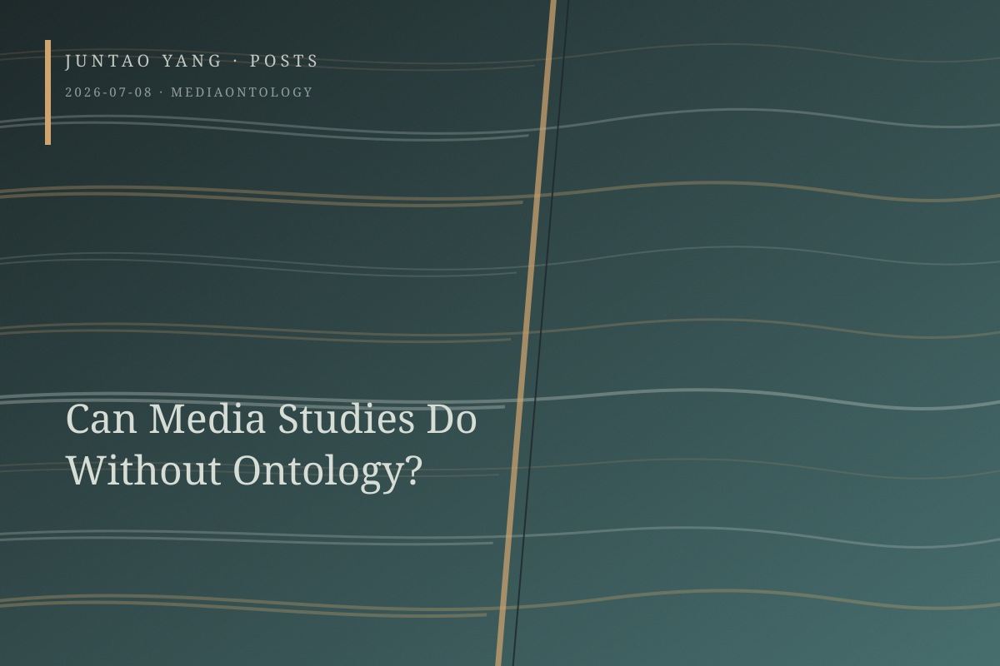

<content>
Since the late 1990s, contemporary media studies has sought to enlarge the boundaries of what counts as media—a process that has also compressed the institutional space of film studies. Throughout this expansion, an undefended theoretical and rhetorical slippage has become commonplace. Theorists elevate nature, geology, and other descriptive metaphors into ontological claims presented as beyond dispute. Two books published in 2015 are exemplary: John Durham Peters’s The Marvelous Clouds and Jussi Parikka’s A Geology of Media. Between them, oceans, fire, the sky, the earth, and virtually everything else become media. Yet do these arguments offer sufficient philosophical warrant for their passage beyond metaphor? In both Parikka and Peters, writing repeatedly conflates and stitches together the material conditions of experience with the ontological proposition that earth or environment is itself a foundational mediation.
The ontological assertion is an expedient mode of writing. Outwardly, it generates an aesthetic posture and ethical impulse possessed of an almost auteurist allure; inwardly, it relieves itself of the heavy argumentative burden of epistemological analysis. To launch an ontological assertion, the theorist deploys metaphor as the vehicle of this slippage. If Hans Blumenberg’s “absolute metaphor” orients thought toward what exceeds its conceptual grasp, then translating metaphor into propositional and objective truth may be the fundamental error of contemporary media theory.
Media studies’ enthusiasm for ontological trespass seems to register a deeper anxiety about disciplinary position and institutional legitimacy after the revolutionary force of the linguistic turn had nearly run its course. Confronted with charges that the humanities had confined themselves to games of discourse, scholars began using environment, geology, and the elements as new currency in an internal competition for scientificity and legitimacy. The drive to establish a disciplinary ground through ontological proclamation promises theoretical security and an end, once and for all, to disputes over the definition of media.
Heather Love has diagnosed a comparable impulse toward radical universalization in queer theory’s pursuit of professional status within the academy. Media studies similarly attempts to elevate itself into a first philosophy through sweeping ontological claims. In the process, it suspends grounded critique of real-world political economy and historical context, lapses into speculative self-circulation, and may even retreat, quietly, into the essentialism it once claimed to dismantle.
We should be wary of inflating local and still insufficiently described empirical facts into metaphysical dogmas that claim authority over everything. What is needed is a nonconceptual metaphor and a theory capable of honesty and restraint. If media theory can relinquish its imperial ambition, its writers may yet preserve metaphor’s continuously withdrawing, unruly, and generatively critical force, rather than allowing it to harden into the voice of truth.
</content>
July 8, 2026
Can Media Studies Do Without Ontology?
Contemporary media theory repeatedly converts descriptive metaphors of nature, geology, and elements into ontological claims whose philosophical warrant remains uncertain.
